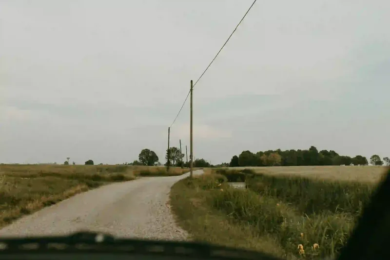

[日常] 感謝那些使我人生道路偏移的人們

突然想起短暫認識的K，我現在甚至完全不記得他的名字。
他很熱衷於命理，應該說具有某種敏感體質（應該有些更正式的術語，但我不太了解），因而鑽研其中，聽起來有點怪力亂神，不過我覺得很有趣。
N年前，在台大校園數小時的漫步閒聊之後，我們在蔬食餐廳用餐。當時不知道聊到什麼，似乎提到了集體人類的方向(?)，「我們（這樣的nobody）所做的事其實能帶來的影響很小，但例如總統的決策，便能使路線產生明顯的偏移。」仔細想也是，因為他的一個決策就等同於代理千萬國民做決定。
不是要談論國家大事，只是在想身旁的人對自己的影響。或許多數影響很小，但某人、有些人的存在，就像總統之於集體人類一樣，大大地讓自己的人生方向產生偏移。
雖然有「自己的人生自己做主」的口號，而自己向來也認同並執著於不依賴他人、不被決定的姿態，但比起總是充滿自信地走自己選擇的路子，多數時候都是迷惘且軟弱的。
那個重要他人不是指路要求照做，而是以一種形象、行為、概念式地提供支持與啟發，然而強大的影響力勢必奠基於長期相處的信賴關係，有這樣一個能帶來力量且願意維持關係的人是彌足珍貴的，對於因此造成的道路偏移與轉彎充滿感謝，雖然會想著「這也是無法堅定自己的一種妥協吧？」或是「我這樣還算擁有自我意志嗎？」。（真的很難搞）
這兩年認識的人都帶有這種傾向，而且莫名的有不同的分工（不同面向的影響），不曉得是我變柔軟、懂得聽人話了，還是運氣很好總是遇到好人？
（也必須承認好人也有帶來負面影響，這偶爾會讓我想：「是不是降低接觸的頻率比較好？」維持頻繁見面的長期關係真難）
20241111 臉書搬過來的貼文。
5年後的現在，身邊仍有那些給我建議、陪伴我成長的人，真心充滿感謝。
我也發現自己不只是接受他人的幫助，自己同時其實也可以、有力量，帶給別人一些東西。
留言
電子郵件不會公開，只用來辨識留言者。第一次留言會先經過審核，之後同一個電子郵件的留言會直接顯示。本留言區以 Cloudflare Turnstile 防止垃圾留言。